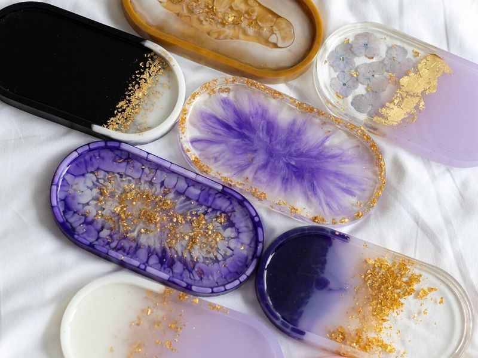
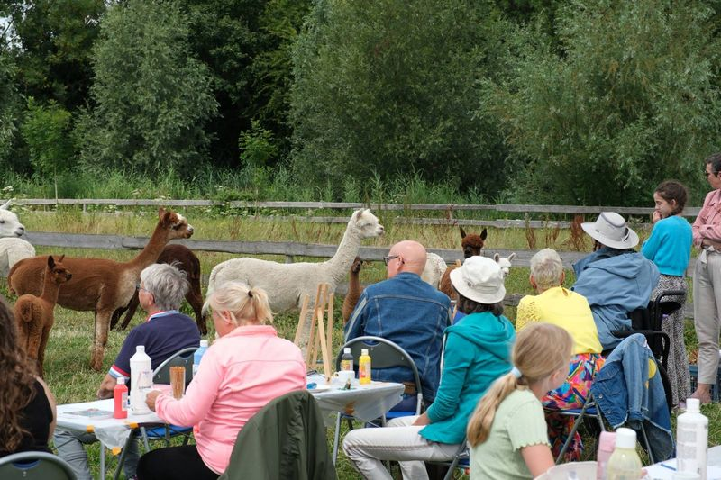
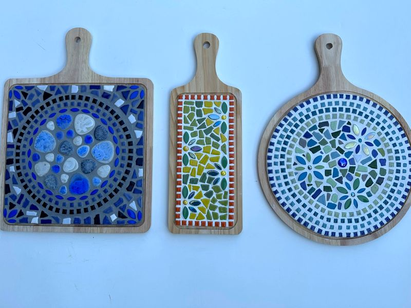
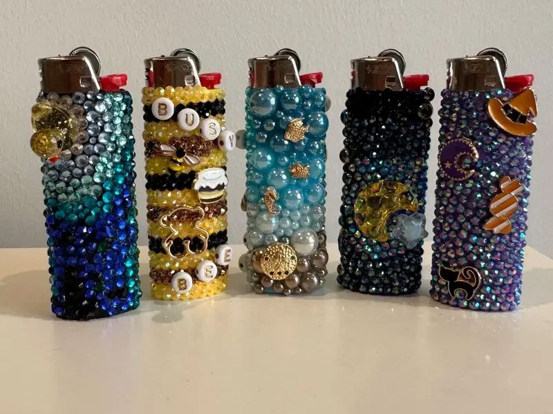
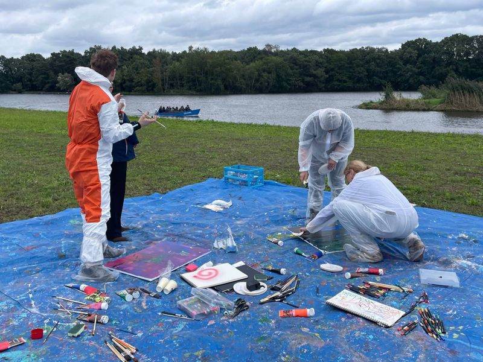
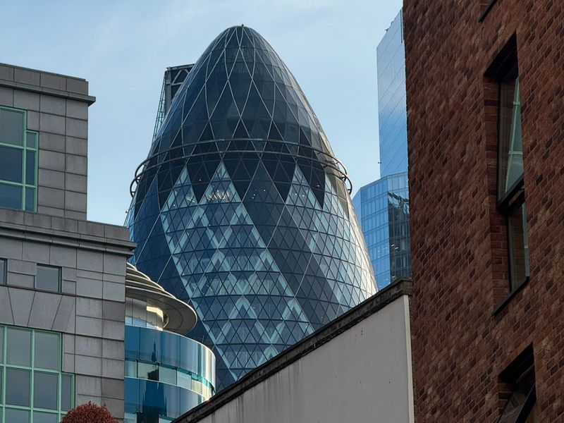

Cocktail Kaarsen Maken
Giet uw favoriete cocktail in een prachtige geurkaars. U gaat naar huis met een kaars die eruitziet als een echt drankje.
Meer informatieWij geven workshops in diverse stijlen, door heel Nederland. Wij verzorgen al onze workshops zowel bij u op locatie als in ons eigen atelier in de Betuwe. U hoeft geen ervaring te hebben en alle materialen zijn inbegrepen.
De prijs hangt alleen af van de grootte van uw groep. Bekijk de prijzen voor een indicatie.
Giet uw favoriete cocktail in een prachtige geurkaars. U gaat naar huis met een kaars die eruitziet als een echt drankje.
Meer informatie
Giet uw eigen onderzetters, kaarsenhouders of een borrelplank van epoxy, met glitter, bloemen en kleur. Ook mallen op maat!
Meer informatie
Schilder schattige alpaca's terwijl u deze vriendelijke dieren ontmoet. Een unieke en gezellige workshop!
Meer informatieSchilder buiten in een prachtige appelboomgaard, met de natuur als inspiratie voor uw creativiteit.
Offerte AanvragenSchilder de prachtige natuur en planten van een voedselbos, en leer tijdens een rondleiding meer over het bos.
Offerte AanvragenShinrin-yoku: geniet van een rustgevende dag in het bos. Adem de frisse boslucht in en ontspan volledig.
Offerte Aanvragen
Ontwerp en maak uw eigen unieke armbanden en kettingen met prachtige kralen. Laat uw creativiteit spreken!
Meer informatie
Maak een prachtig mozaïek, bijvoorbeeld op een borrelplank. Verfijnd handwerk met kleur en patroon!
Meer informatie
Laat het glinsteren! Versier een aansteker, mok, onderzetter, pot of uw eigen voorwerp met sprankelende steentjes. Alle materialen zijn inbegrepen.
Meer informatie
Gooi de verf op het doek en voel de vrijheid! Een expressieve workshop vol creativiteit en plezier, waarbij u de stress van u af laat glijden.
Meer informatie
Leer prachtige foto's maken met uw telefoon. Tips, trucs en compositietechnieken voor betere plaatjes!
Meer informatieVraag vrijblijvend een offerte aan. Wij nemen zo snel mogelijk contact met u op om alles af te stemmen.